La policía deja malherido al enajenado que retenía a 25 niños en una escuela de Luxemburgo.
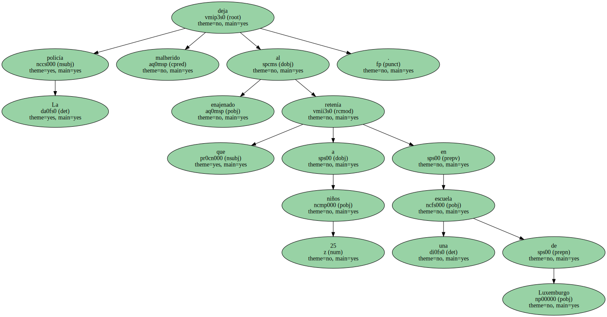Los pequeños salieron sanos y salvos después de que los agentes aprovecharan un descuido.
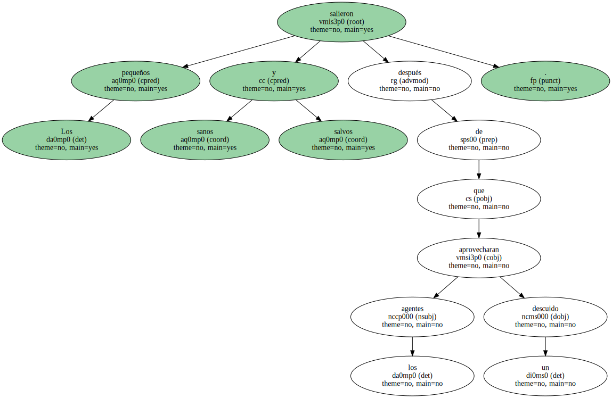Las fuerzas especiales de la policía lanzaron ayer por la tarde el asalto a la escuela infantil de Wasserbillig , en Luxemburgo , y lograron liberar sanos y salvos a los 25 niños y los tres educadores que aún permanecían retenidos en el edificio.
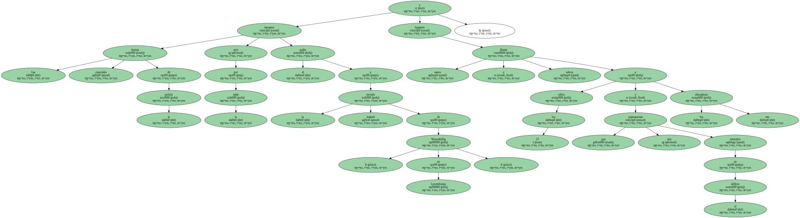El secuestrador fue gravemente herido durante la operación relámpago , que puso fin a una pesadilla de 29 horas para las angustiadas familias.
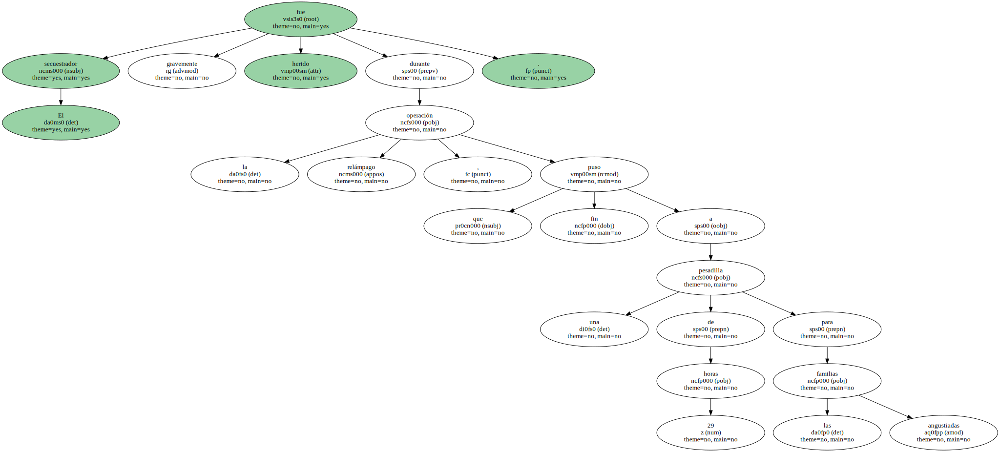La orden de asalto fue dada por la policía a las 19.20 horas cuando el secuestrador salió al exterior del edificio acompañado de un niño pequeño y otro de más edad , según explicó posteriormente el portavoz de la policía.
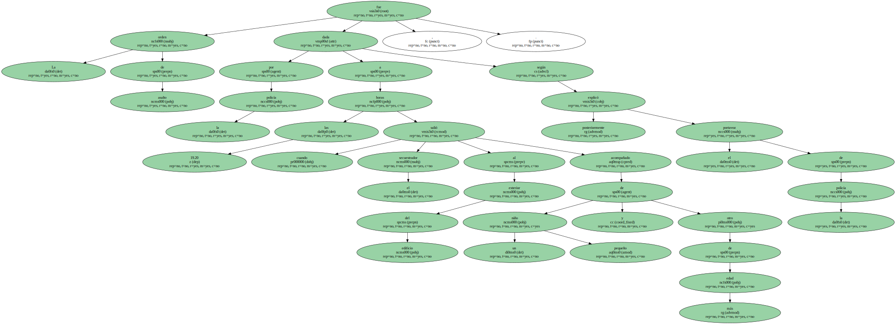Un tirador de élite de las fuerzas especiales logró alcanzarlo con un disparo en la cabeza , lo que desencadenó la operación.
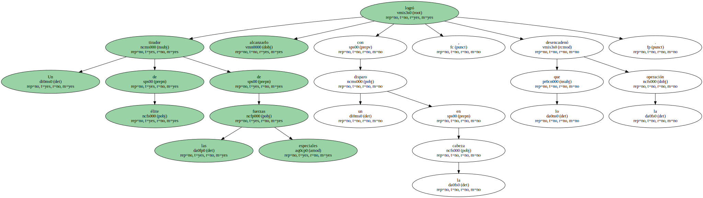" Está agonizando , pero aún no está muerto . Su estado es muy grave " , precisó la policía tras liberar a los rehenes.
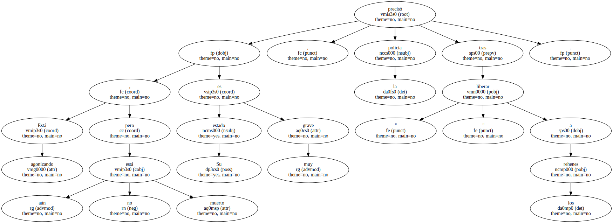El drama había comenzado a las 15.30 del miércoles , cuando Neji Bejaoui , de 39 años , de origen tunecino y fuertemente armado , se atrincheró en la escuela infantil de la apacible localidad luxemburguesa , situada junto a la frontera alemana.
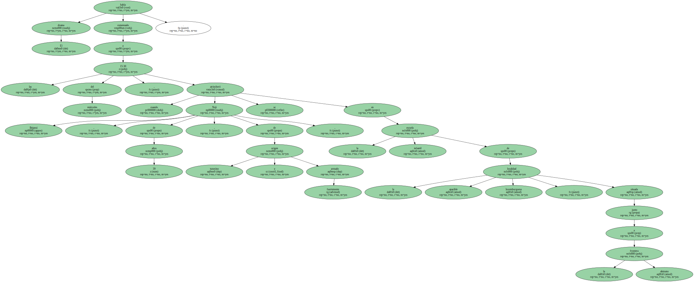El secuestrador estaba armado de una pistola , una granada de mano y un cuchillo.
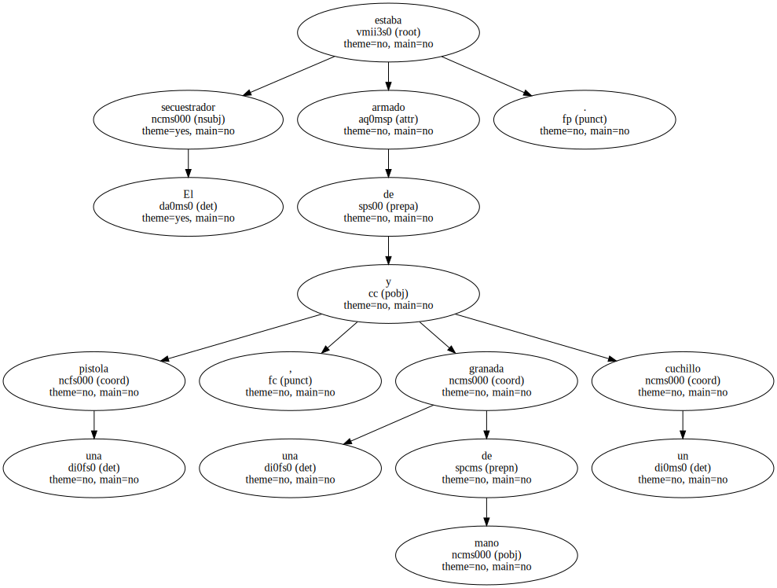En la escuela había en ese momento 45 niños de 3 a 7 años y tres educadores.
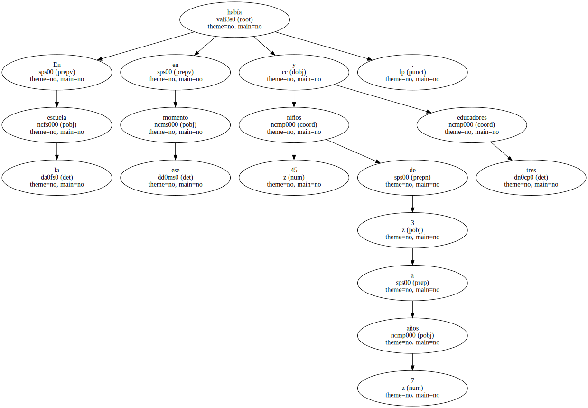Una parte importante de los niños era de origen portugués , debido a la importante presencia de la comunidad lusitana en Luxemburgo.
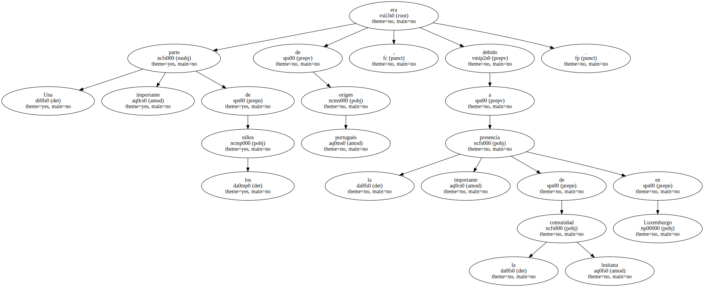Entre los rehenes también había varios niños franceses y , al menos , una niña belga.
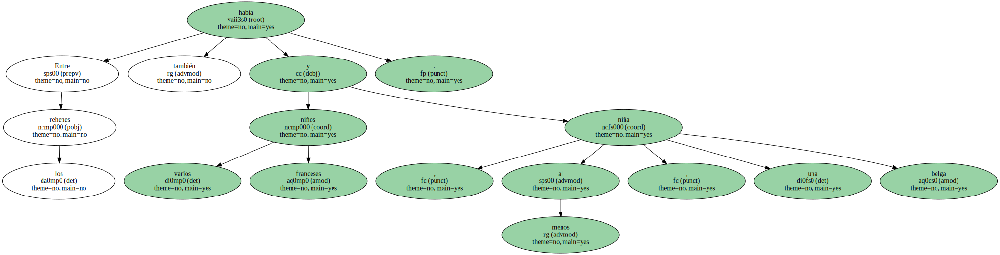La policía luxemburguesa rodeó el edificio con un amplio despliegue de efectivos , que establecieron un perímetro de seguridad de 500 metros.
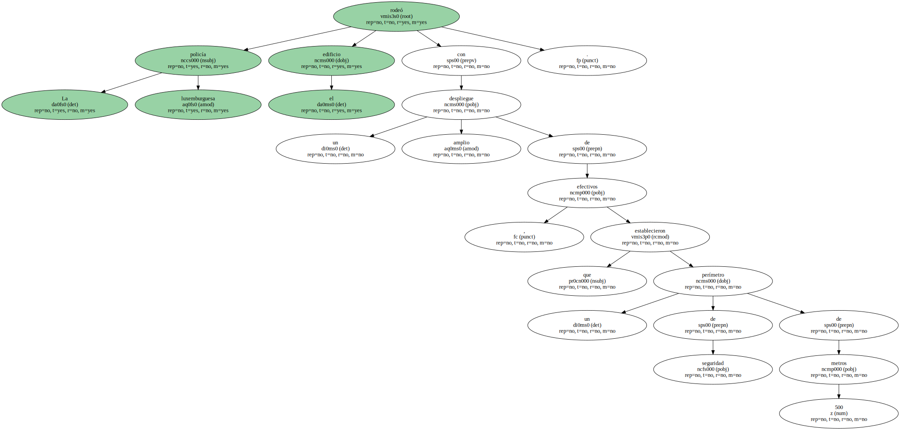Los servicios de protección civil acogieron a las angustiadas familias de los rehenes en un centro cultural situado en las inmediaciones para darles apoyo psicológico.
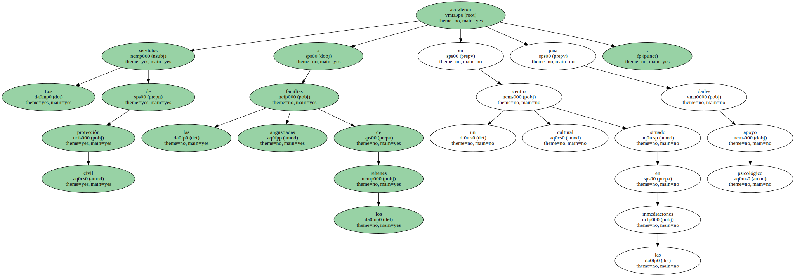El secuestrador pidió hablar con su psiquiatra y un minibús para conducirlo al aeropuerto junto a un grupo de niños , un avión para llevarlo a Libia y un rescate de 1,5 millones de euros ( 250 millones de pesetas ).
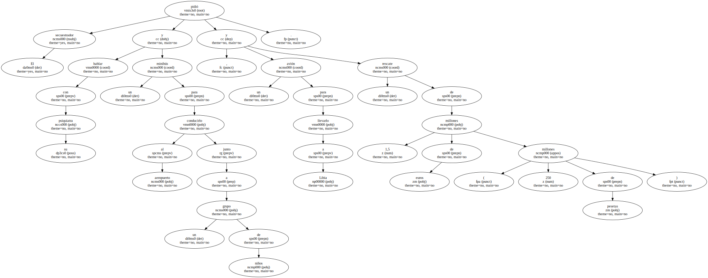Bejaoui aseguró en todo momento que no pretendía causar ningún daño a los niños.
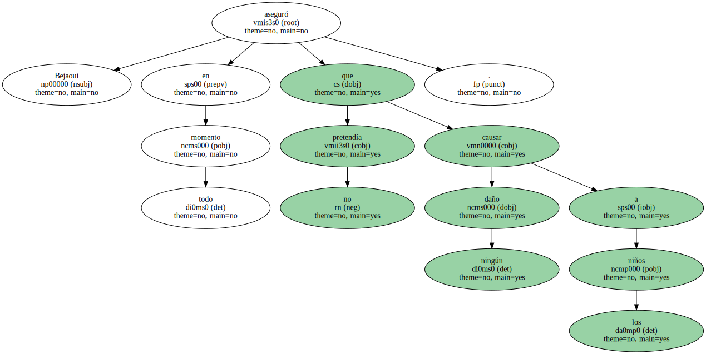Como muestra de buena voluntad , liberó durante la tarde del miércoles a 16 menores.

Estos , según la policía , se encontraban bien , sin ninguna herida , aunque estaban conmocionados.
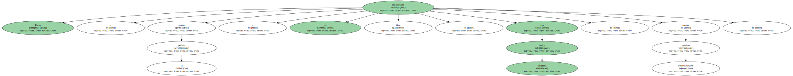Durante toda la noche , el secuestrador mantuvo contactos telefónicos con la policía , en los que repitió sus exigencias y fijó un ultimátum para las 8.30 de la mañana.
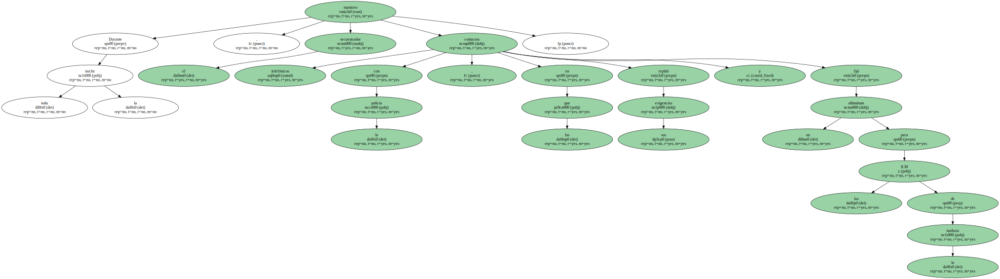Un equipo especial de intervención alemán acudió a Wasserwillig para reforzar el dispositivo de seguridad.

Tras expirar el ultimátum , el secuestrador fue liberando en cuentagotas a otros cuatro niños a lo largo de la mañana de ayer y rebajó sus exigencias.
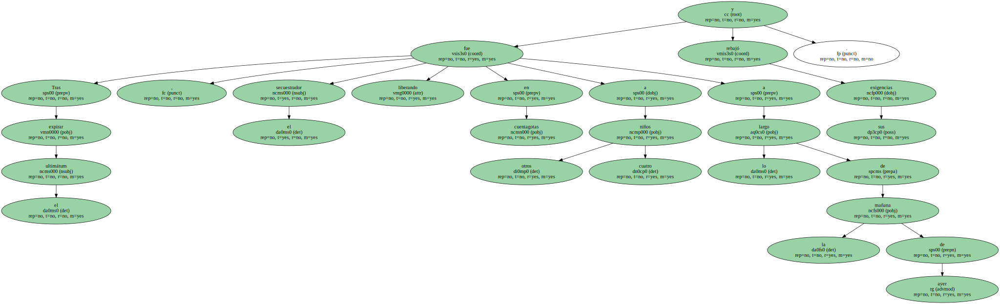Bejaoui renunció a pedir un rescate y a exigir que un grupo de niños le acompañara al aeropuerto.
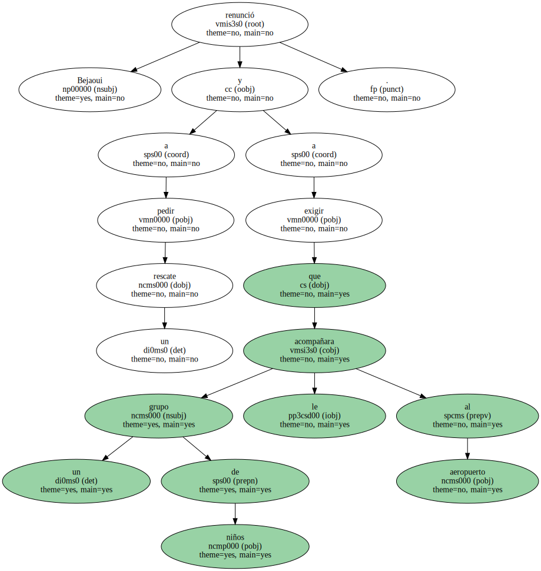Por la tarde , tras una noche en en blanco , el secuestrador comenzó a dar signos de nerviosismo y apareció en una ventana de la escuela , protegiéndose con un niño y sosteniendo en una mano una granada.

Al final , la policía aprovechó su descuido.
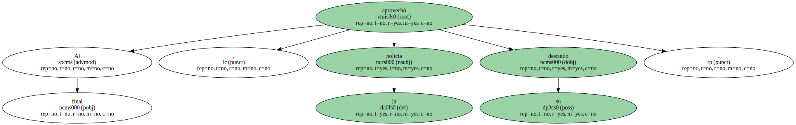